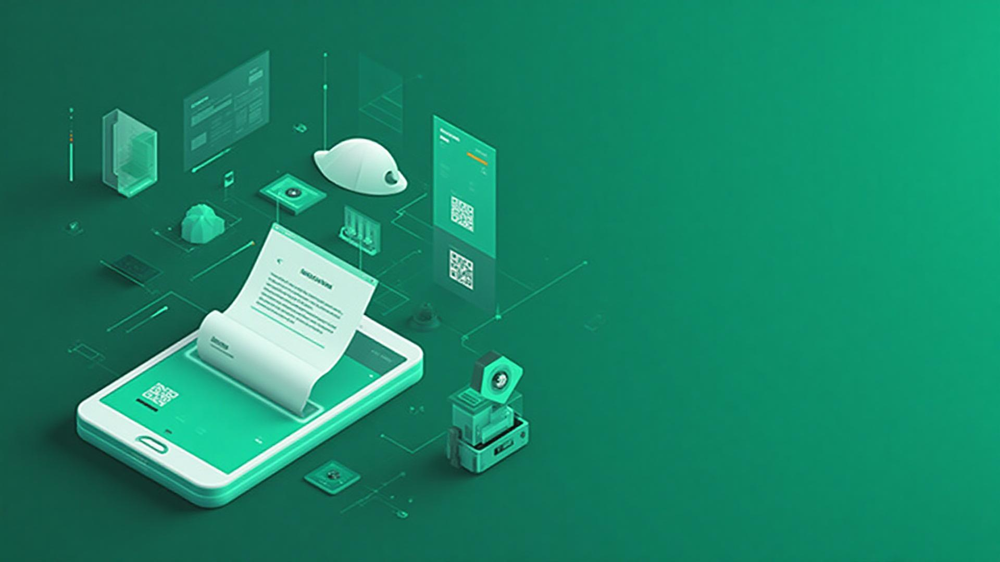
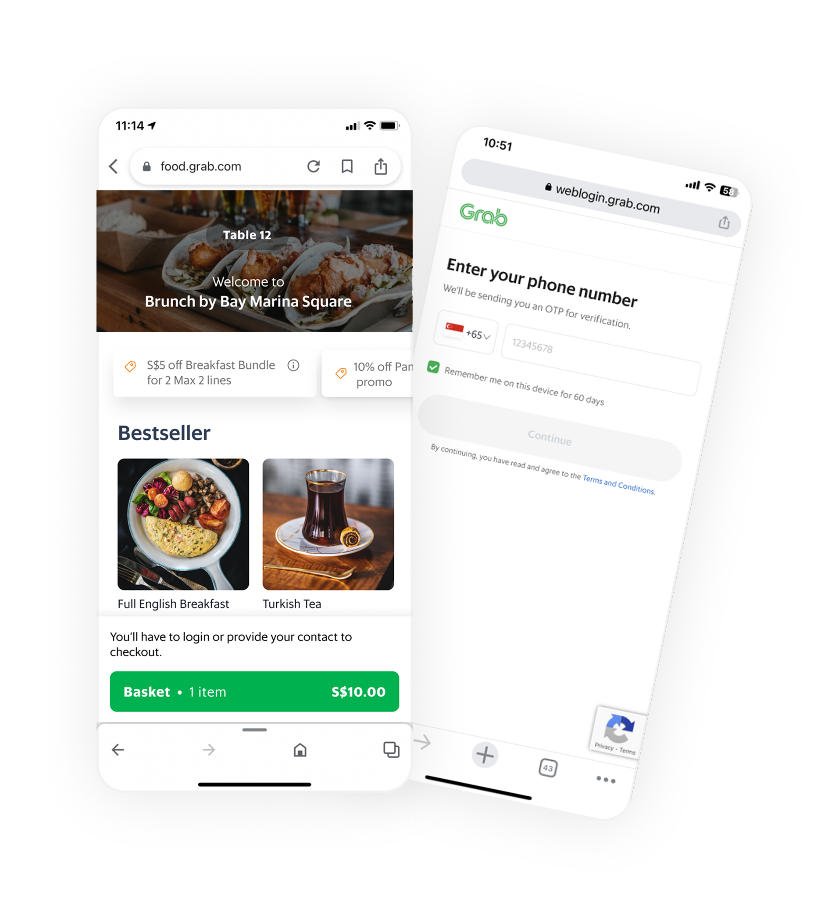

Grab Dineout: Scan to Order 2.0
A collaborative, frictionless shared ordering and payment flow for restaurants, elevating diner experience and boosting merchant adoption.

Context: STO 1.0
Grab launched the first version of Scan To Order (STO) to help restaurant diners browse, order, and pay via QR code. While it solved the need for contactless ordering, adoption was low. Merchants faced operational pain points and diners dropped off due to friction-filled flows.
54% User Drop-Off
Majority of users abandoned orders during account verification. The login wall was killing conversion.
Feature Gaps
No takeaway options, guest ordering, or payment method localisation. Competitors offered all of these.
No POS Integration
Cashiers manually re-entered orders, causing delays, errors, and reconciliation nightmares for merchants.
Operational Inefficiency
Merchants couldn't track table-level spend, with orders scattered across invoices.

Competitive Analysis & Learnings
To do this the right way this time, we looked at leading Southeast Asian STO solutions, went down to the field to see how people actually order, and identified common patterns.
Goal: Redefining STO
Problem Statement
How might we rebuild STO into a merchant-first, data-driven solution that reduces friction for diners and boosts average order value (AOV) through personalisation and ecosystem integration?
Differentiators
QR ordering in 2025 is a crowded space with many high-quality solutions. To stand out, we needed our product to deliver value not just to end consumers but also to merchants. We identified four key differentiators:
AI-Driven Upsells
Increase AOV through intelligent recommendations using Grab's ecosystem data.
For MerchantsContextual Loyalty
Enables Grab loyalty within the ordering flow to capture user consent and drive retention.
For MerchantsShared Ordering Experience
Plan and modify a shared basket for the table together in real-time, reducing total time to order.
For CustomersPersonalisation
Intelligent and personalised ordering experience based on user preferences and history.
For CustomersDesign Evolution
STO 2.0 streamlines entry, reduces friction at checkout, and supports group dining with shared context. Click the tabs to explore how standard views were redesigned to solve user drop-offs:
Testing & Learnings
In-person usability testing and interviews with 12 participants
Multi-User Shared Basket Simulation
To validate the communal basket concept, we built a scrappy backend prototype that simulated multiple users interacting with a shared basket in real-time. This allowed us to test how users would interact with the shared basket and how it would affect the overall ordering process.
Key Findings
Core Flow
Core flow was smooth and intuitive, with no major issues, users were able to navigate the flow quickly and easily.
Shared Basket
Users liked seeing others items in the basket and being able to modify them in real-time. It worked best in group settings like family or close friends.
Item Attribution
Users wanted to know who ordered what in the shared basket to ensure there's no confusion around who owes what.
Payment
Users were unclear on when they were supposed to pay and who is supposed to pay how much.
Post-Launch Impact
Early rollout data and pilot feedback highlighted the following outcomes:
Reduction in time to order for all users.
Order completion rate for all users.
Improvement in order coverage per merchant.
Average merchant adoption rate per POS partner.
Final Reflection
The redesign of STO wasn't just about fixing UX friction, it was about rethinking the role of data in dining. By merging POS intelligence, ecosystem integration, and customer insights, Grab STO 2.0 transforms every meal into a smarter, more rewarding experience for both diners and merchants.